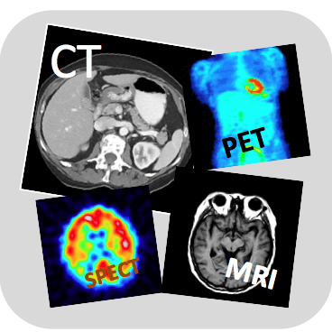
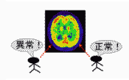
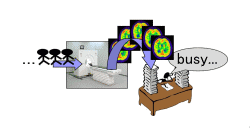
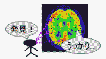

医用イメージングプロジェクト／医療診断プロジェクト
ＣＴ・ＭＲＩ・ＰＥＴ等の医用診断装置は病気の診断に不可欠なものであり、最先端の医用イメージング技術の研究を行っています。例えば、３次元画像を100倍以上のスピードで撮影するコーンビームＣＴ、心臓や血流の動画像をリアルタイムで撮影する４次元ＣＴ、ＣＴ検査の被曝量を１／１０以下に削減する超低被曝ＣＴ、がんの超早期発見や全身検査を可能にするＰＥＴや光ＣＴ、２種以上の画像を同時に撮影するマルチモダリティを対象として、新しい装置構成方式の提案や高画質の画像を生成する画像処理手法の開発等の研究を行っています。また、ＣＴ・ＭＲＩ・ＰＥＴ等で撮影した医用画像を画像処理により解析して病気（がん・心臓病・認知症）の自動診断や医師の診断支援を行う計算機支援診断、医用画像を解析して人体ディジタルアトラスを構築する新分野である計算解剖学の研究を行っています。
|  |
様々な疾患の診断には医用画像がよく用いられます。医用画像を用いた画像診断は、疾患の早期発見に非常に役立っていますが、これらの画像を正確に読影するためには、多くの専門的知識が必要となってきます。そのため、医師の経験年数によって診断精度が異なったり、また、多くの患者を抱える医師にとって１枚１枚の画像を読影することは大きな負担となってしまいます。また、疾患早期では画像内での病変がわかりづらい場合もあり、医師が視覚的に判断しただけでは見落としてしまう可能性もあります。そこで、近年、このような問題を解決し診断精度の向上を実現させる診断方法として、”計算機支援診断（computer aided diagnosis：ＣＡＤ）”への期待が高まっており、世界中の多くの医師、大学や企業の研究者たちが興味を持ち、システムの実用化を目指し研究・開発を行っています。 このような背景を踏まえて、このプロジェクトではＣＡＤの実用化を目的としたアルゴリズムとソフトウェアの開発を行っています。
|  |  |  |
| 1.医師によって診断精度が異なる | 2.医師への負担が大きい | 3.見落とすことがある |
Copyright © 2015 Image Science Lab. All rights Reserved.